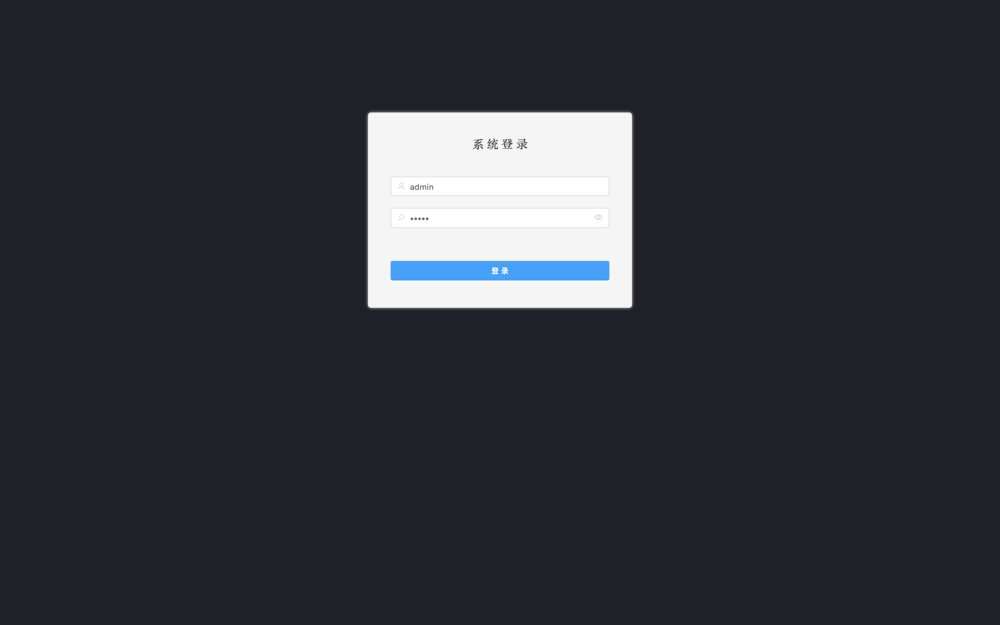
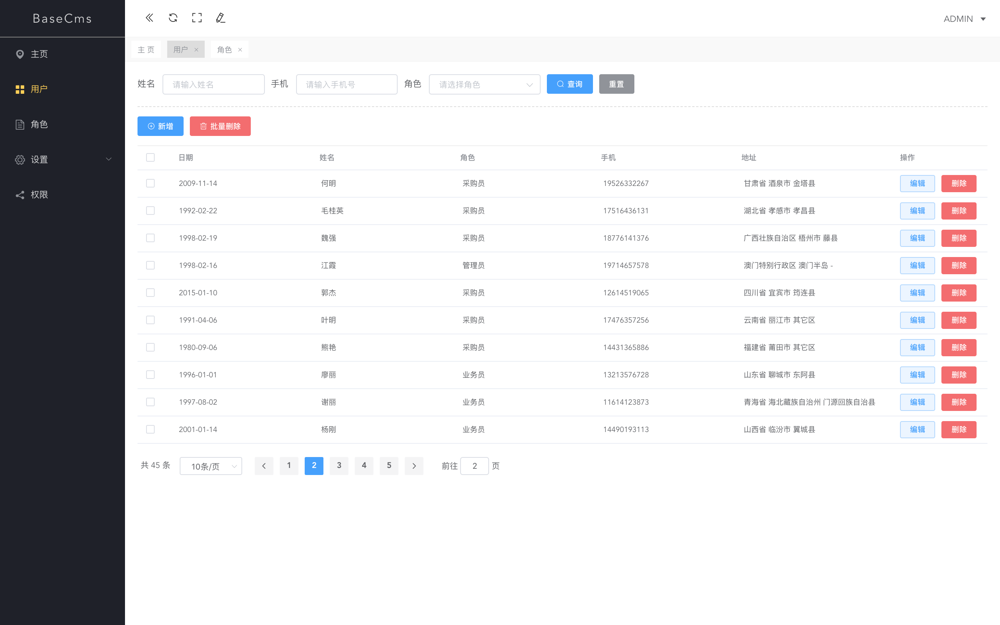

一、项目效果图预览：


二、项目介绍
基于 elementui 写一个自己的管理后台。这个系列文章的目的就是记录自己搭建整个管理后台的过程，希望能帮助到那些入门 vue + elementui 开发的小伙伴。之前有写过一个很简洁的版本，但觉得那个版本太粗糙，也没有相关的搭建过程讲解，学习意义不大。所以这个版本相当于对之前版本的升级和补充。那么项目中涉及到的知识点有哪些呢？
1. elementui 常用组件的使用和细节
2. axios 的封装及使用
3. vuex 的使用和模块化
4. 动态菜单的生成，动态路由的配置
5. 标签页的实现（类似页面多开）
6. mockjs的使用讲解
7. 自定义组件的实现
三、开发环境
开发工具：VS Code ; 版本管理：Git + Github ; 脚手架：vue-cli 3.0